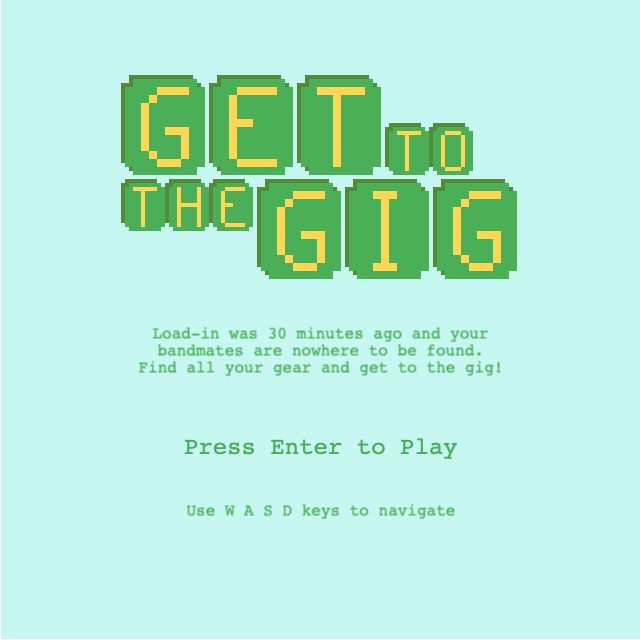

Get To The Gig
Get To The Gig is a simple browser based game written in JavaScript, built with the Phaser 3 and Tone.js frameworks.
Check out the work-in-progress demo
Source code on GitHub
About
I wanted to build a game that utilized music in an interactive way, and in which the music itself was composed via code as oppposed to only playing back audio files. I thought of a quest style game in which the player picks up instruments and a corresponding musical layer is added to the soundtrack.
The Game
“Load-in was 30 minutes ago and your bandmates are nowhere to be found. Find all your gear and get to the gig!"
The player is presented with a top-down map, with restricted tiles (water) and obstacles (trees & rocks). They must reach the music venue, but can only enter after they’ve collected all of their gear items. The player navigates with W A S D keys. As instruments are collected, a new music layer is added to the soundtrack. Other items (merch) play a sound effect but do not add musical layers.
Status
At present, the game is only a simple, single level. My main goals were to:
- build a game with Phaser 3
- utilize Tone.js to compose the game music
- have game mechanics interact with the music
- get some experience using the Tiled map editor
- make some pixel art using Pixilart
- I’m pretty stoked on the venue graphic, based on thee beloved Shea Stadium BK

- I’m pretty stoked on the venue graphic, based on thee beloved Shea Stadium BK
Some possible future development may include:
- additional levels (with other venues near and dear to my heart)
- additional songs for each level
- more complexity in the instrumental parts
- more complexity in song structure (ie. verse, chorus, bridge for longer levels)
- songs with varying styles to match level vibes
- tone.js transcriptions (covers) of friends' songs (with permission)
- custom sprites for player and items
- Stakes!
- a countdown to gig time
- the tempo increases as time left decreases?
- scores based on time
- NPCs that interfere with the quest
- Lasers? magic bolts? to counter NPCs
Deployment
I wrote a short tutorial on deploying the game with Webpack and GitHub pages.
Screenshots
Title Scene
